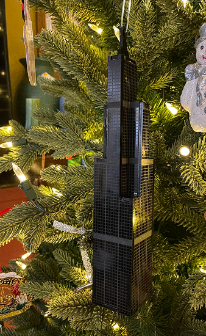
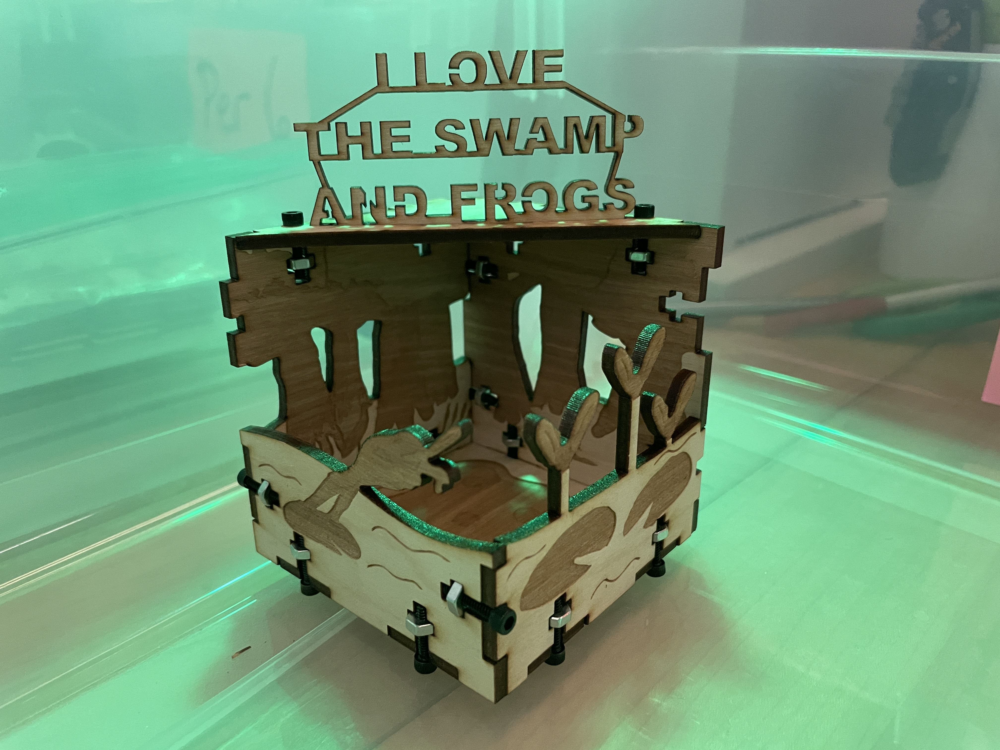
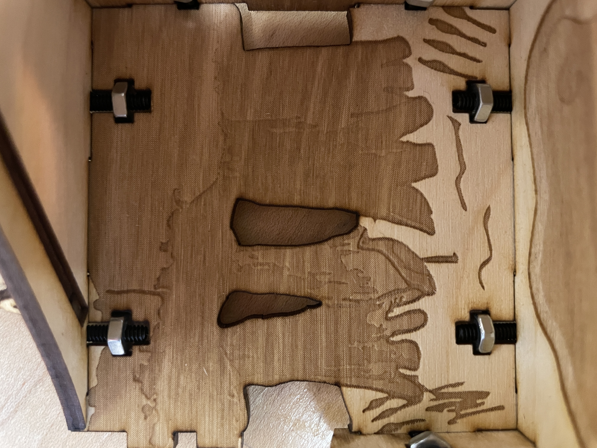
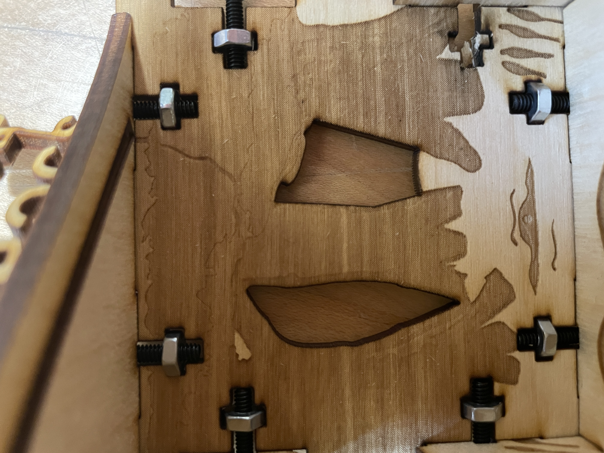

Creative Endeavors
Scale Model Sears Tower
These are laser cut and etched scale model sears tower christmas ornaments, however they can also be just models to display on your desk. I designed the laser cutting and etching using proffesional laser cutting software while making sure to keep the floors, windows, and sections all to scale.


Frog Box
Laser cut and etched diorama of a bog, with the primary focus being the jumping frog and flies. I designed the laser cutting and etching using proffesional laser cutting software. This project was a labor of love and I spent a ton of time drawing out and making everything look perfect digitally, however due to the limitations of laser etching onto wood a lot of the details did not shine through as much as I wanted, however I am still very proud of the results.

There are messed up screw holes on the side because my teacher forced me to use the premade box template, also I wanted to use glue instead of screws, but once again, my teacher made me use the screw template for the box.

Flies hover above lilypads

A crane sits in the marsh

An alligator peaks above the water
The website linked below will be migrated to this website, and additional projects will be added, including multiple projects created with the use of laser cutters
Go here to view more